| Menu | Image | Explanation |
|---|---|---|
| 1. File |  |
See also: Exportable files |
| 2. Edit |  |
|
| 3. Projects | 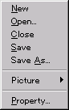

|
|
| 4. Palettes | 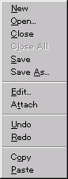 |
|
| 5. Draw |  |
|
| 6. View |  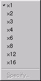
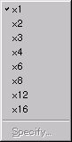 |
|
| 7.Tools | 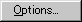 |
|
| 8. Windows | 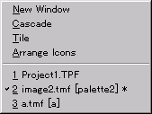 | The same as in other applications. Explanation is omitted. |
| 9. Help | 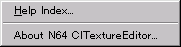 |
|
| Control bars | Image and explanation | |
|---|---|---|
| 1. Tool bar | 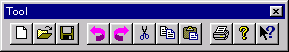 | |
 New New Open Open Save Save Undo Undo Redo Redo Cut Cut Copy Copy Paste Paste Print Print About About Help Help |
||
| 2. Draw tool bar |  |
|
 Select Select Zoom Zoom Pen Pen Line Line Box Box Box fill Box fill Circle Circle Circle fill Circle fill Paint Paint Replacer Replacer Pick with right-click (toggle button) Pick with right-click (toggle button) |
||
| 3. View tool bar | 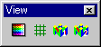 | |
 Palette dialog bar ON/OFF Palette dialog bar ON/OFF Grid ON/OFF Grid ON/OFF IS-VIEWER64 Preview 1 ON/OFF IS-VIEWER64 Preview 1 ON/OFF IS-VIEWER64 Preview 2 ON/OFF IS-VIEWER64 Preview 2 ON/OFF |
||
| 4. Status bar |  |
|
|
Explanations for the controls (buttons and menus) at the cursor position are displayed on the left side of the status bar.
"(85,135) 200%" indicates the pen coordinates and the magnification. "(320,240) 8bit" indicates the size and the bits of the currently edited image. |
||
| 5. Palette dialog bar |
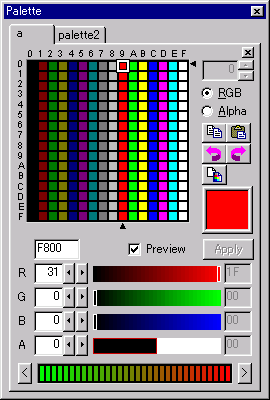 |
Pages increase when the palettes increase. The 4bit/8bit palette list is displayed, and the pen color can be selected with the mouse. You can change the color settings by double-clicking the mouse or pressing the "Edit" button to open the Color settings dialog. Copy - Paste - Attach |
| 6. Project dialog bar |
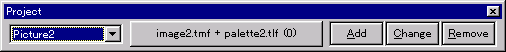 | |
| The name of the registered picture and its assemblage of images and palettes are displayed from the left. (These are buttons which can be used to open images and palettes.) The successive buttons are the Add button, Change button and Remove button. | ||
{kind=link}
{kind=link}
If you see NO PALETTE message being displayed, that means image cannot be displayed because no palette is specified.
Information contained in the project is displayed in tree structure
Drag & drop and right-click of mouse that brings up pop up menu can be used.
Project
The top node of a project which cannot be moved or removed.
Right-click brings up a pop up menu, you can edit the property.
Picture
Pictures are registered in this node.
Animation
Animation is managed in this node. No move or remove can be done.
Sequence
Animation patterns are managed in this node.
TPF File Name
Type in a unique project name with no directory name or extension.
TPF Directory
Specify a directory for a working directory that project file is stored.
TMF Directory
Specify a directory for a working directory that TMF file is stored.
TLF directory
Specify a directory for a working directory that TLF file is stored.
Width, Height
Input a value in pxel for size
Bit Mode
4 bits (16 colors) / 8 bits (256 colors)
Bit Mode
Specify which bit mode to use for palette.
Kinds of Colors
Select which kinds of colors to use from 16 bits RGBA and 16 bits IA.
Default Alpha Value
Specify Alpha value when pallete is created new.
This dialog sets working directries to use for project.
Either one of the following methods brings up the dialog: Project menu > Picture > Add/Change in
Project dialog bar, or Add/Edit menu that right-click brings up on a picture node in Project window
Give a unique picture name, select TMF/TLF combination, and then click on OK to add and edit picture setting.
Double-click on color button on Palette dialog bar to call the dialog.
This dialog is called from Help menu > Version information.
Use this dialog to change the default settings of application.
Ask if I use project before creating a new TMF.
This dialog will show if project is not open when creating a new TMF.
Click on "New" to create a new project, "Open" a existing project, and "Cancel" to close the dialog.

In that case, use "Attach" located in Palette Dialog Bar to assign colors so that the image can be displayed.
Use drag & drop to move registered pictures.
You can move a picture and drop it on a sequence to add an animation pattern to the sequence.
Use right-click that brings up a pop up menu to add a sequence.
Use right-click that brings up a pop up menu to add pictures as an animation patter.
Drag & drop can used to move registered pitctures.
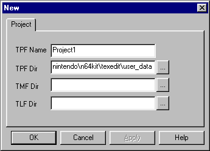
If omitted, TPF directory is used.
If omitted, TPF directory is used.

Minimum values are 1 x 1 with maximum 1024 x 1024.

(8 bits/256 colors can be handled as 4 bits/16 colors x 16 blocks.)
See N64 developers' all manual for details regarding 16 bits RGBA/IA.
0 or 1 when 16 bits RGBA
Any integer (0 - 255) when 16 bits IA

The file name list displayed in the combo box are registered using the file names contained in the directoties specified in the pproject property.
When you create a new file name, simply type in a unique file name and then click on New button.


Check on this check box for a dialog to come up asking if the user wants to use project.

Check on the check box to turn off the dialog. It won't show up later.
You can change the setting later from Tool menu> Option dialog